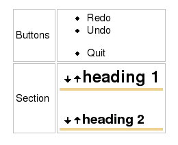

Table Markup
To create a table, you start and end a line using the table marker "||". Between those start and end markers, you can create any number of cells by separating them with "||". To get a centered cell that spans several columns, you start that cell with more than one cell marker. Adjacent lines of the same indent level containing table markup are combined into one table.
For more information on the possible markup, see HelpOnEditing.
Table Attributes
Apart from the option to repeat cell markers to get columns spanning several other columns, you can directly set many HTML table attributes. Any attributes have to be placed between angle brackets <...> directly after the cell marker.
The wiki-like markup has the following options:
<-2>: colspan
<|2>: rowspan
<style="..."> will put that style info into cell (td) html
<rowstyle="..."> will put that style info into row (tr) html
<tablestyle="..."> will put that style info into table (table) html
<class="..."> will put that CSS class into cell (td) html
<rowclass="..."> will put that CSS class into row (tr) html
<tableclass="..."> will put that class into table (table) html
<id="..."> will put that CSS id into cell (td) html
The style stuff is all you need for styling your tables. Just use CSS formatted style there and it will be inlined in the generated HTML tag. Alternatively, the admin and the user (the admin in the theme file, the user via UserPreferences can extend moin's CSS by his own definitions, so users can refer to them using class or id. You can use several options at the same time by writing them one after the other within the same angle brackets (e.g. <tablestyle="..." rowstyle="..."> on the first cell, to set both the table-wide style and the first-row style).
We still support the old table markup, but generate the effect by appending additional values to the style parameter:
<50%>: cell width (will append width: 50%; to style)
<width="50%">: does the same
<tablewidth="100%">: set table width to 100% (only valid in first table row)
<(>: left aligned (will append text-align: left; to style)
<:>: centered (will append text-align: center; to style)
<)>: right aligned (will append text-align: right; to style)
<^>: aligned to top (will append vertical-align: top; to style)
<v>: aligned to bottom (will append vertical-align: bottom; to style)
<#XXXXXX>: background color (will append background-color: #XXXXXX; to style)
<bgcolor="#XXXXXX"> does the same
<rowbgcolor="#XXXXXX"> set row background color (only valid in first cell)
<tablebgcolor="#XXXXXX"> set table background color
If you use several conflicting options like <(:)>, the last option wins. There is no explicit option for vertical centering (middle), since that is always the default.
Example
NEW STYLE: General table layout and HTML like options:: ||||||<tablestyle="width: 80%">'''Heading'''|| ||cell 1||cell2||cell 3|| ||<rowspan=2> spanning rows||||<style="background-color: #E0E0FF;"> spanning 2 columns|| ||<rowstyle="background-color: #FFFFE0;">cell2||cell 3|| Cell width:: || narrow ||<style="width: 99%; text-align: center;"> wide || Spanning rows and columns:: ||<|2> 2 rows || row 1 || || row 2 || ||<-2> row 3 over 2 columns || Alignment:: ||<style="text-align: left;">left ||<style="vertical-align: top; text-align: center;"|3> top ||<style="vertical-align: bottom;"|3> bottom || ||<style="text-align: center;"> centered || ||<style="text-align: right;"> right || Fonts:: || normal ||<style="font-weight: bold;"> bold ||<style="color: #FF0000;"> red ||<style="color: #FF0000; font-weight: bold;"> boldred || Colors:: ||<style="background-color: red;"> red ||<style="background-color: green;"> green ||<style="background-color: blue;"> blue || OLD STYLE: General table layout and HTML like options:: ||||||<tablewidth="80%">'''Heading'''|| ||cell 1||cell2||cell 3|| ||<rowspan=2> spanning rows||||<bgcolor="#E0E0FF"> spanning 2 columns|| ||<rowbgcolor="#FFFFE0">cell2||cell 3|| Cell width:: || narrow ||<:99%> wide || Spanning rows and columns:: ||<|2> 2 rows || row 1 || || row 2 || ||<-2> row 3 over 2 columns || Alignment:: ||<(> left ||<^|3> top ||<v|3> bottom || ||<:> centered || ||<)> right || Colors:: ||<#FF8080> red ||<#80FF80> green ||<#8080FF> blue || Line breaks within cells:: || line 1[[BR]]line 2||
Display
- NEW STYLE: General table layout and HTML like options
Heading
cell 1
cell2
cell 3
spanning rows
spanning 2 columns
cell2
cell 3
- Cell width
narrow
wide
- Spanning rows and columns
2 rows
row 1
row 2
row 3 over 2 columns
- Alignment
left
top
bottom
centered
right
- Fonts
normal
bold
red
boldred
- Colors
red
green
blue
- OLD STYLE: General table layout and HTML like options
Heading
cell 1
cell2
cell 3
spanning rows
spanning 2 columns
cell2
cell 3
- Cell width
narrow
wide
- Spanning rows and columns
2 rows
row 1
row 2
row 3 over 2 columns
- Alignment
left
top
bottom
centered
right
- Colors
red
green
blue
- Line breaks within cells
line 1
line 2
Insert Table Data from other sources
comma separated values: see HelpOnParsers#csvparser
include wiki pages: see Include
Bulleted lists and other complex content within cells

see MiniPage macro